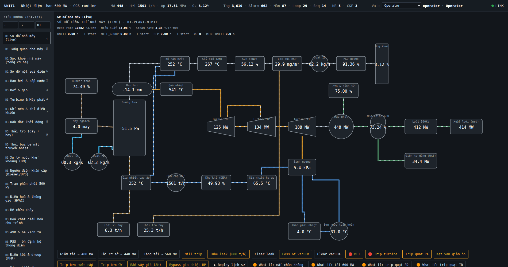

IDTP mô phỏng trọn vẹn một tổ máy nhiệt điện subcritical, drum-type, reheat, lưới 500 kV: lò hơi · tuabin–máy phát · đường khói (SCR/ESP/FGD) · nước cấp · điện · và toàn bộ hệ phụ trợ (BoP). Vật lý tất định, màn hình khai báo, vòng điều khiển kín, alarm ISA-18.2, OTS & Historian — tất cả trên cùng một lõi generic.

Kernel + engine generic chạy dữ liệu khai báo của plugin. Thêm nhà máy mới = thêm một plugin, không sửa một dòng kernel. Màn hình là JSON do kernel render — không hardcode trong React.
~12 engine L2: tag-realtime · graphics · alarm (ISA-18.2 shelving) · control-loop · sequence (SFC) · cause-effect · interlock · simulation-host · historian (≥50k điểm/s) · navigation · faceplate · KPI · report · maintenance · predictive · AI-advisor (chỉ đọc) · event-journal (SOE) · security (RBAC 6 vai).
44 mô hình mô phỏng cộng dồn, khép cân bằng năng lượng toàn nhà máy ~100%: lõi chu trình + đường khói/điện/nước + 10 hệ BoP + chiều sâu physics (TSE, NPSH/xâm thực, surge quạt, AVR, bảo vệ ANSI…).
Bấm "Mở HMI đầy đủ" để vào phòng điều khiển ảo — tự đăng nhập vai Operator, chạy hoàn toàn client-side.
Mimic tổng thể + ~55 màn D1/D2/D3, stream theo từng màn (report-by-exception).
Freeze/snapshot/restore, MFT, trip tuabin, tube-leak, mất chân không, trip quạt…
Deadband + delay, shelve có lý do & hẹn giờ, rationalization, KPI EEMUA-191.
Trend đa-tag, phát lại lịch sử — mọi lệnh ra thiết bị bị chặn cứng khi replay.
Ma trận C&E, permissive chặn lệnh khi điều kiện quá trình không cho phép.
Giải thích alarm rule-based — tuyệt đối không ghi tag/setpoint/ACK.